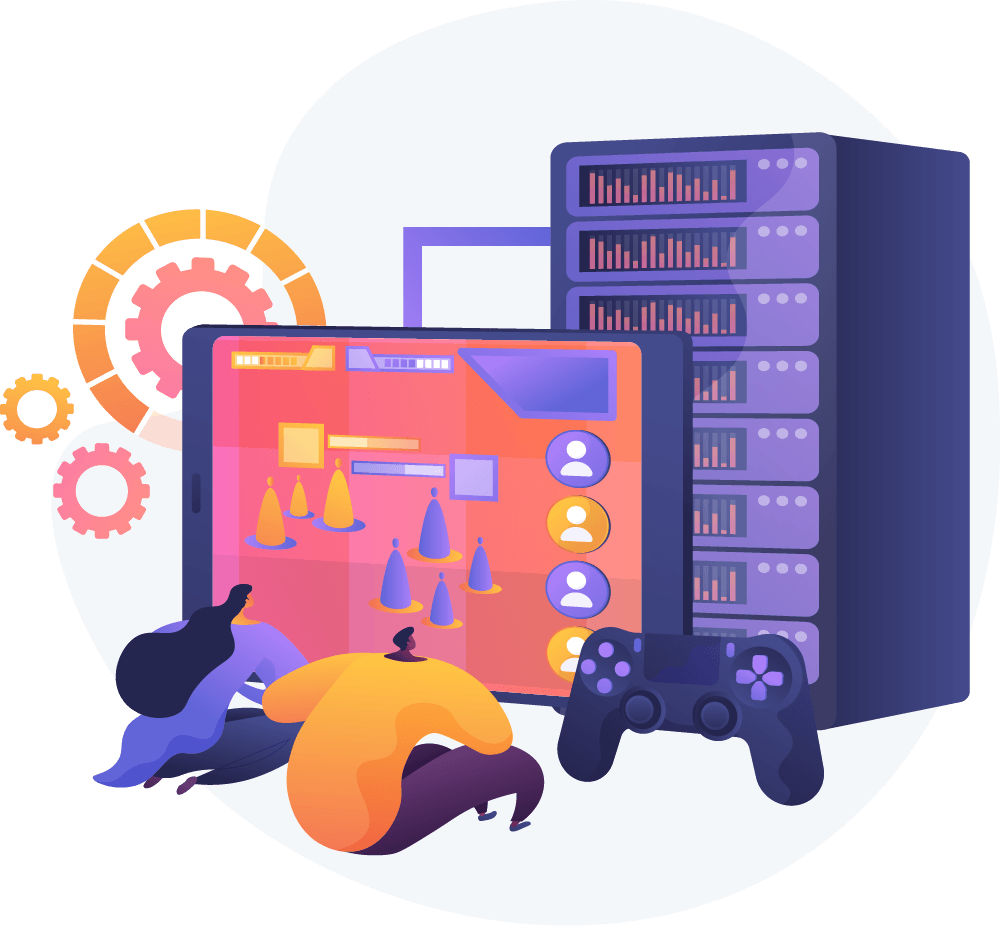

Loading...
Searching...
No Matches
Design pattern and network convention
Entity-Component-System (ECS) Design Pattern
The Entity-Component-System (ECS) is a software architecture pattern primarily used in game development but also applicable in other domains. It emphasizes modularity, performance, and scalability by breaking down objects into three core concepts:
1. Entities
- An entity represents a unique identifier or object in the system.
- Entities are typically lightweight and have no logic or behavior on their own.
- They serve as containers that aggregate components.
2. Components
- Components are data containers. Each component holds specific attributes or properties.
- They are decoupled from the logic, making them reusable and easy to manage.
- Examples of components could include position, velocity, health, or rendering data.
3. Systems
- Systems define the logic and behavior of the application.
- They operate on entities that possess specific combinations of components.
- For example, a
velocitySystemmight update the position of entities based on their velocity and other physics-related components.
Benefits of ECS
- Separation of Concerns: ECS separates data (components) from behavior (systems), making the codebase cleaner and more modular.
- Performance: ECS enables cache-friendly data access patterns, improving performance in scenarios like game loops.
- Flexibility: New behaviors can be added by creating new systems and components without altering existing code.
UDP (User Datagram Protocol) Networking Convention
UDP is a transport layer protocol used for sending and receiving data across networks. Unlike TCP, UDP focuses on speed and simplicity, often at the expense of reliability.

Characteristics of UDP
- Connectionless: No persistent connection is established between the sender and receiver.
- Unreliable: There is no guarantee of data delivery, ordering, or error correction.
- Lightweight: Minimal protocol overhead compared to TCP.
- Fast: Suitable for real-time applications where low latency is critical.
Use Cases for UDP
- Real-time Games: UDP is ideal for transmitting real-time data such as player positions, where occasional packet loss is acceptable.
- Streaming: Media streaming applications prioritize speed over reliability, making UDP a suitable choice.
- IoT and Sensors: Devices with limited resources often use UDP for lightweight communication.
Networking Conventions with UDP
- Packet Size: Keep packets small to avoid fragmentation, which can lead to higher packet loss rates.
- Error Handling: Implement custom mechanisms for handling lost or corrupted packets, as UDP does not provide this functionality.
- Ordering: Use sequence numbers in packets if the order of data matters.
- Timeouts and Retries: Define custom timeout and retry logic for critical data transmissions.
- Firewalls and NAT Traversal: Ensure that UDP ports are open and properly configured to traverse firewalls and NAT devices.
Advantages of UDP
- Low Latency: Ideal for time-sensitive applications.
- Scalability: Suitable for high-volume, multicast, or broadcast scenarios.
Challenges of UDP
- Lack of Reliability: Developers must implement their mechanisms for handling lost or unordered packets.
- Security Concerns: UDP is susceptible to spoofing and amplification attacks, requiring additional safeguards like encryption and validation.
By understanding and leveraging ECS for modular software design and UDP for lightweight, real-time communication, we would build systems that are both efficient and scalable, especially for a video game.
